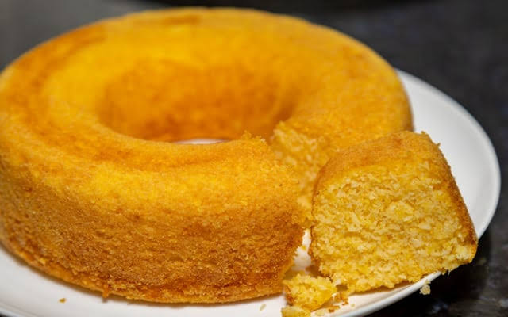

Bolo
Bolo de fubá cremoso

Categoria: Bolos e tortas | Preparo: 10 min | Forno: 40 min | Rendimento: 12 fatias | Dificuldade: Fácil
Ingredientes:
- 3 ovos
- 1 xícara (chá) de açúcar
- 1 xícara (chá) de óleo
- 2 xícaras (chá) de leite
- 1 xícara (chá) de fubá
- 1 xícara (chá) de farinha de trigo
- 100 g de queijo parmesão ralado
- 1 colher (sopa) de fermento em pó
- Manteiga e fubá para untar
Modo de preparo
- Bata no liquidificador os ovos, o açúcar, o óleo e o leite por 2 minutos.
- Acrescente o fubá, a farinha e o queijo e bata mais um pouco, até ficar homogêneo.
- Junte o fermento e misture com uma colher, sem bater.
- Despeje em uma forma untada e polvilhada com fubá.
- Asse em forno preaquecido a 180 °C por cerca de 40 minutos, até dourar e o palito sair limpo.
Dica
Adicione o fermento por último e não bata depois disso, assim o bolo cresce mais e fica mais macio.